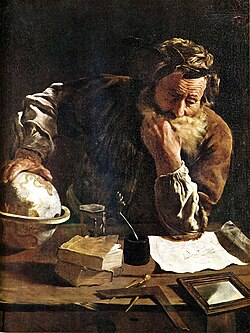

287 - 212 BC
Archimedes

Portrait: Domenico Fetti, Public domain, Wikimedia Commons.
Events (5)
- 370 BCEEudoxus: theory of proportion and method of exhaustion
developer · Analysis
- 250 BCEArchimedes' mechanical method for areas and volumes
originator · Geometry
- 860Al-Mahani: geometric problems reduced to algebra
originator · Algebra
- 870Ibn al-Haytham and Ibn Sinan: quadrature
originator · Analysis
- 1615